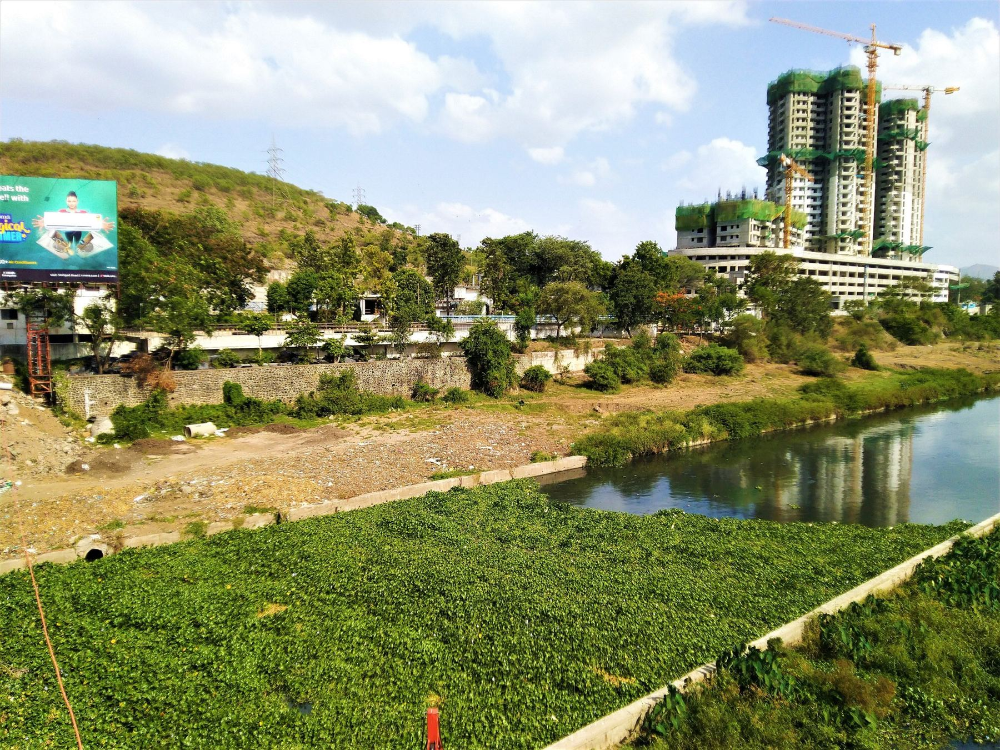
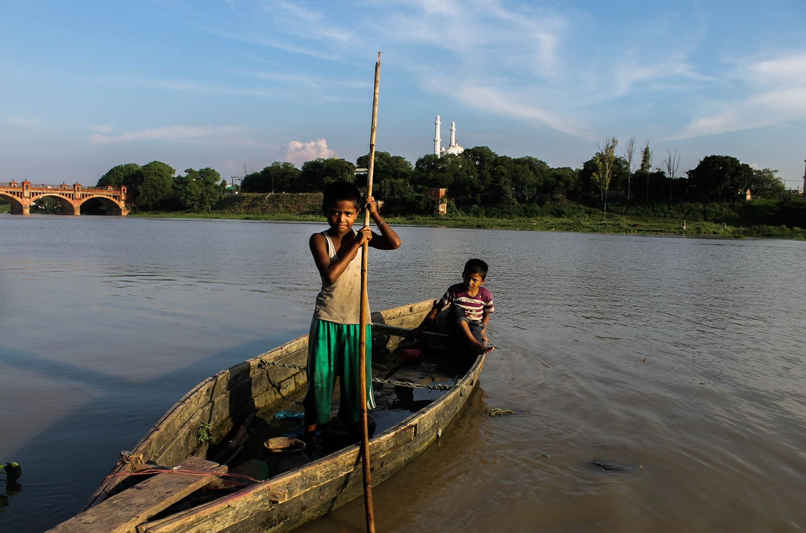
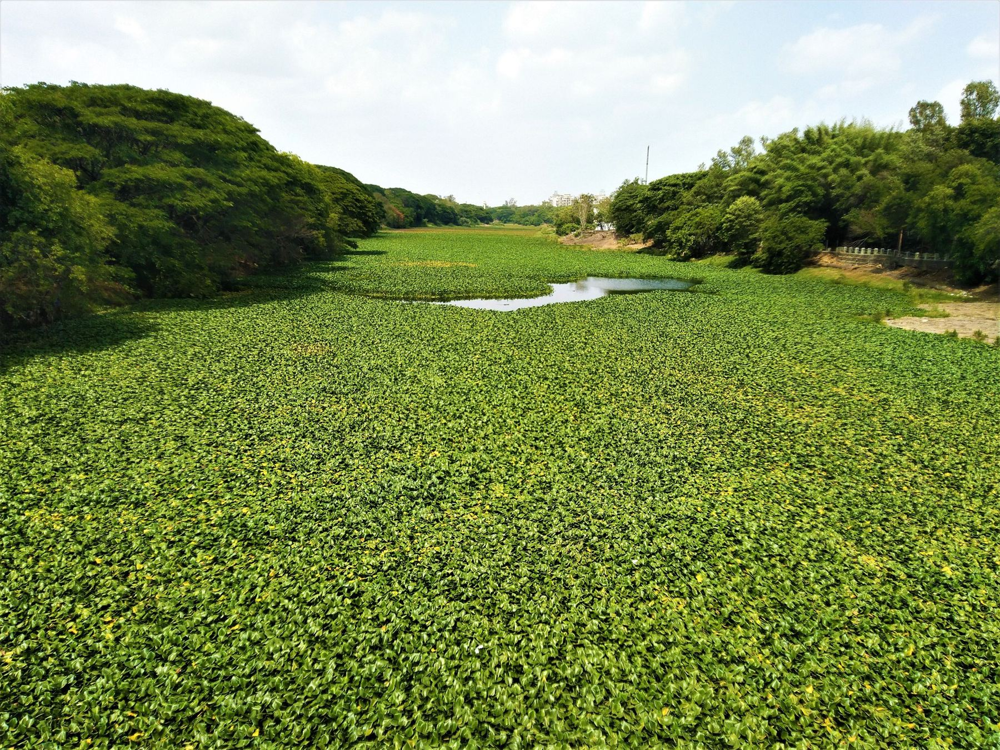
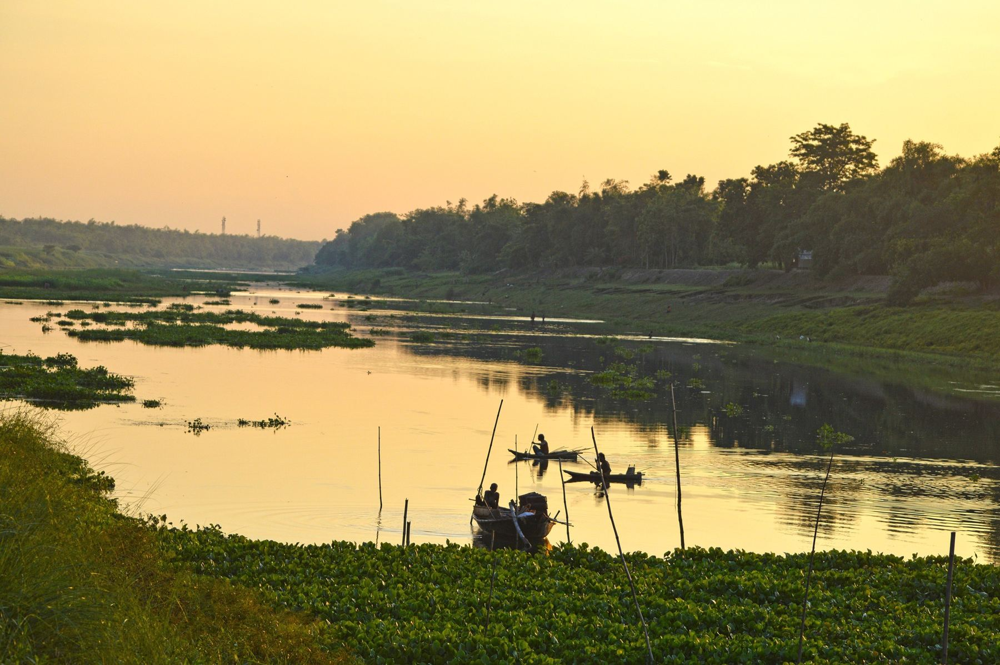
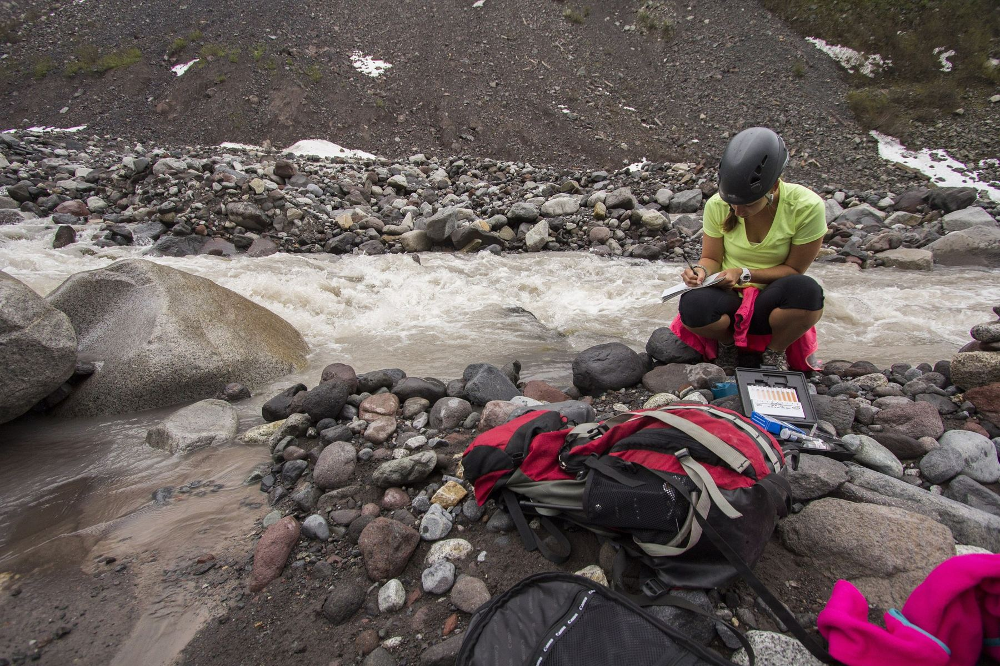
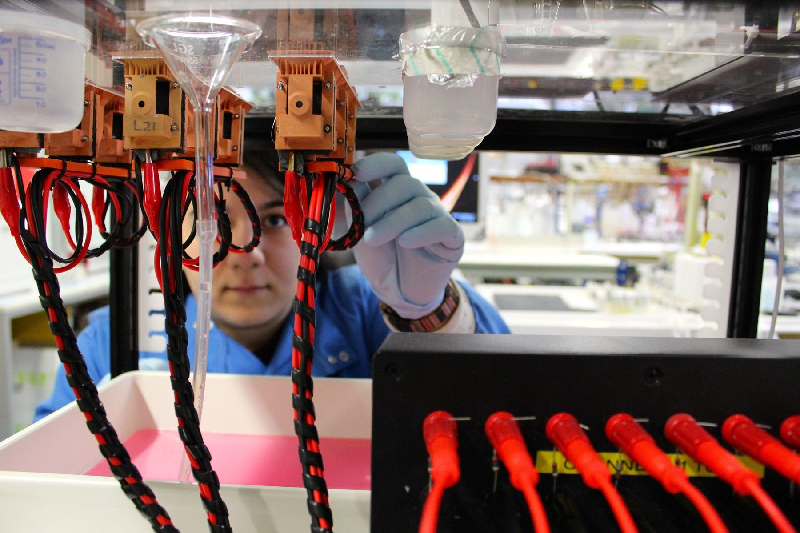
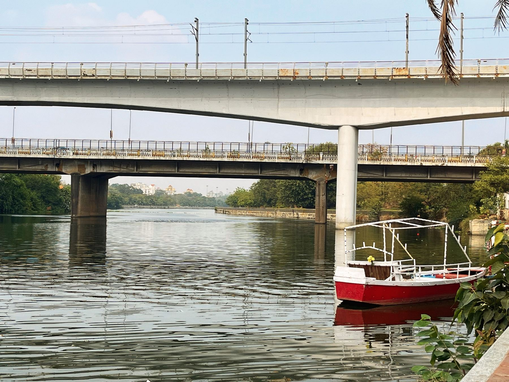
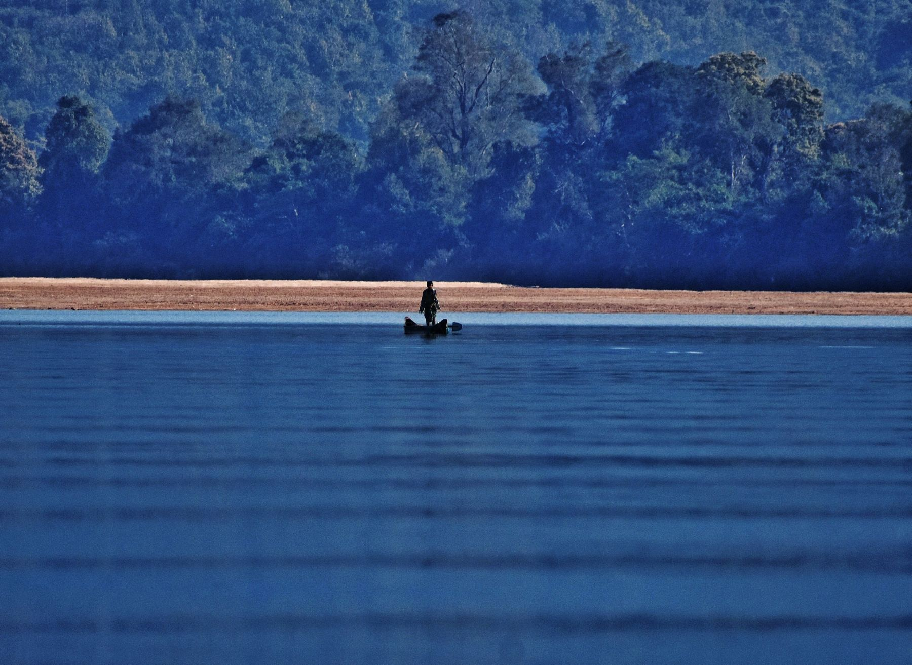
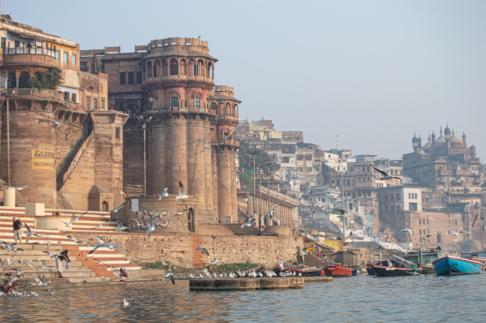

Untreated sewage
Drains carry city waste straight into the river.
NIB 2026 · Future Innovators Exhibition · Theme: Society Welfare
A drain monitor that runs on sewage. No battery. No power line.
Powered by the very pollution it measures.

Gomti River, LucknowThe problem

Drains carry city waste straight into the river.

Waste feeds weeds that choke the water and starve it of oxygen.

Fishing families and riverside homes live with the result.
Gomti Revival Mission · Oct 2025

The gap
What if the pollution itself could power the monitor?
The science
A Microbial Fuel Cell catches those electrons with carbon electrodes and turns them into a small electric current.

Microbial fuel cells · Bristol BioEnergy Centre, UKProof it's real
How it works
The clever part
Illustration of the trend, not measured data.
Power source = Sensor
Concept dashboard · Gomti drains



Battery-free units at every drain that meets the Gomti, then every city on the Ganga and its rivers, wherever there is dirty water and no power.
Director's cut
Problem (0:00–1:02) → Turn (1:02) → Solution and impact. The turn is placed near the 35% mark, the classic spot for the "inciting idea", so the second half carries the optimism.
No photo is ever static. Consecutive shots alternate push-in and pull-out (1.04↔1.18) so cuts feel motivated, with an eased curve rather than linear, which reads as "camera" not "slideshow".
Problem scenes get a soft-light green-grey wash (murky water); solution scenes shift to a clean teal. Film grain and a vignette sit over everything to glue photos from different cameras into one world.
Black bars top and bottom signal "documentary" instantly and focus the frame. Subtitles sit just above the bar, inside the safe area.
Music ducks from 0.30 to 0.13 under the voice. Whooshes start 10 frames before each cut (early feels synced, late feels broken). Loudness normalised to −15 LUFS for online playback.
The voice-over was generated with word timestamps. Every headline, chip and diagram step is keyed to the exact word, the motion-graphics equivalent of cutting on dialogue.
Every photo carries a location tag, illustrative charts are labelled, and every image is credited. Judges trust a film that shows its sources.
National Innovators Battle 2026 · Future Innovators Exhibition · Lucknow